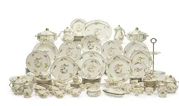
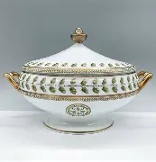
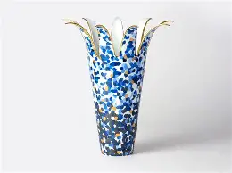
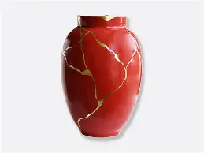
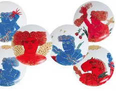
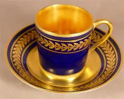
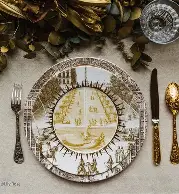
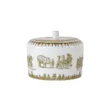
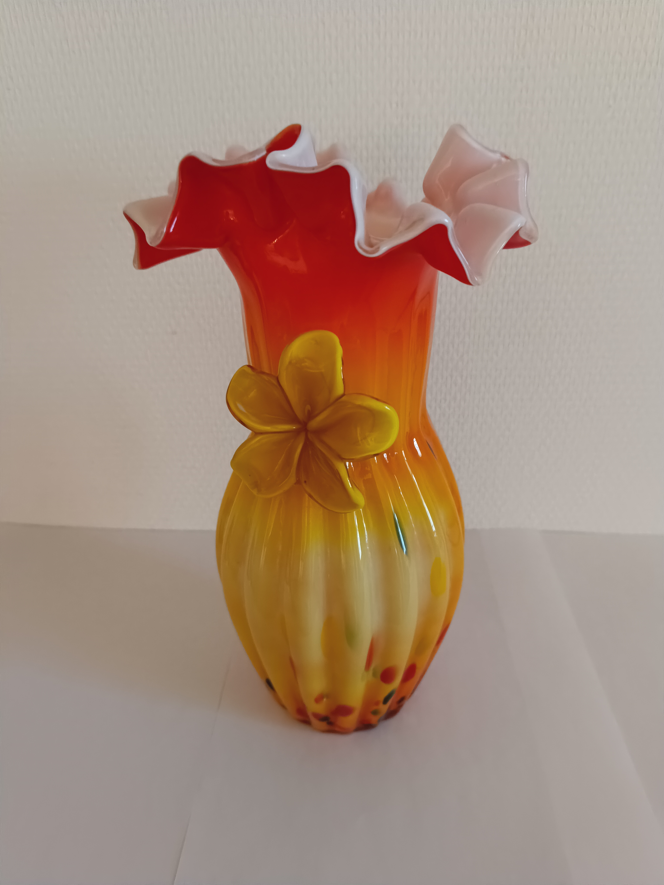

Service en porcelaine
Provenance : Manufacture de Limoges, XVIIIᵉ siècle
Ensemble de vaisselle utilisé lors de grandes occasions, symbole du prestige de la porcelaine française.

Cocotte en porcelaine
Provenance : Paris, fin XVIIIᵉ siècle
Cocotte en porcelaine utilisée à Versailles durant la fin du XVIIIᵉ siecle.

Vase tulippe
Provenance : Limoges, XXᵉ siècle
Vas offert par la France aux Pays-Bas lors d'un séjour diplômatique. Ce vase est une reproduction.

Vase de Chine
Provenance : Chine, XIXᵉ siècle
Vase offert à la France par la Chine lors d'une rencontre d'état à Pékin.

Assiette Picasso
Provenance : Limoges, 1956
Ensemble d'assiettes illustrées à partir de dessins de Picasso. Projet de collaboration entre la manufacture Bernardaud et Picasso. Cet ensemble a été produit en très peu d'exemplaires.

Tasse Egypte
Provenance : Egypte, XIXᵉ siècle
Cadeau de remerciement offert à la France par l'Egypte suite à la finalisation d'un pact d'entraide entre les deux pays au début du XIXᵉ siècle.

Service Versailles
Provenance : Limoges, 2002
Service en porcelaine utilisé au château de Versailles lors de dîners d'état au château. Il est encore utilisé actuellement.

Boîte à bijoux en porcelaine
Provenance : Paris, XVIᵉ siècle
Boîte à bijoux utilisée par les différentes reines de France à Versailles.

Vasse Italien
Provenance : Italie, XVᵉ siècle
Vase en verre soufflé coloré. Il a été exposé dans un musée d'art à Rome, puis a été racheté par le musée de la porcelaine de Limoges en 2015 pour compléter sa galerie "Art du monde". Suite à une restauration du vase, lors de son arrivée, il a été découvert que le vase a appartenu, initialement, à la France.